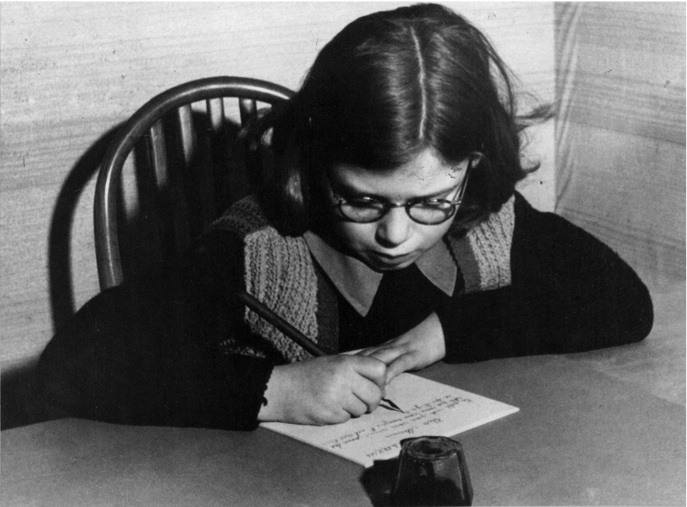
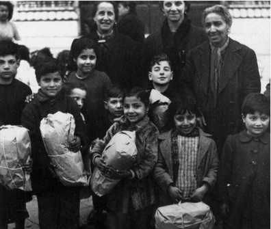

Chana, a Polish orphan living in the Vladeck Home in Paris, writing to the JLC.
On Saturday, March 29th Gail Malmgreen of the Tamiment Library will present the Jewish Labor Committee's film Nos maisons d'enfants from 1949 at the 6th Orphan Film Symposium.
Reproduced here is her article "The Children" from "LABOR AND THE HOLOCAUST: The Jewish Labor Committee and the Anti-Nazi Struggle," Labor's Heritage, Vol. 1, No. 4.
Clearly the future of Jewish life and culture was closely bound to the fate of surviving children - some orphaned, others living with ailing, destitute parents or guardians. Many had emerged from long years in hiding; some had been in the concentration camps. To help the children the JLC organized a Child Adoption Program. Its aim was not adoption in the usual sense, but rather to provide a mechanism by which Americans could contribute to the care of children living in Europe or Israel. At a cost of $300 per year, a union shop or local, fraternal society, Workmen's Circle branch, women's club, or any other group or individual could "adopt" a child. The money was used to supply clothes, school supplies, toys and gifts, and special food parcels. Adoptive "parents" received a photo of "their" child, a biography, progress reports, and letters from the child. the JLC Women's Division, founded in 1947 with May Vladeck Bromberg as president, played a crucial role in soliciting adoptions and also in directly supporting the JLC's children's homes and day nurseries.

Children in Rome receiving JLC parcels, 1945.
Thousands of children were supported in this way well into the 1950s and their letters and drawings are a testament to human goodness and resilience. Chana, a Polish orphan living in the Vladeck Home in Paris, exclaimed, "You ask me what it is I would like you to send. No one has ever asked me such a question before." Antonio, an amputee whose father was shot by the Gestapo, wrote from a Milan hospital, "I think of you many times - I pray to the Lord to give you and your families happiness..."1 Halina, an older girl from Lodz, Poland, stated in January 1948:
"I received your package for which I am very grateful to you. I am a little upset that it is necessary for me to receive assistance from you. I understand that I should be self-dependent by now, but conditions force me to accept aid . . . At present I am studying and I almost caught up with the students whose schooling was not disturbed by the war . . . From time to time I help others with their studies and in this way I try to support myself . . .
In the beginning the ghetto looked terrible to us, but later we became accustomed to it. Then the liquidation of the ghetto and of the Jews began. The ghetto which seemed so terrible to us later seemed to be like the Garden of Eden. Each of us would have been glad to remain in the ghetto until the end of our lives, to hunger, to struggle, just as long as we could be with our families, just as long as our families should not be sent to the crematoriums. Despite the terrible loneliness, hunger, sickness, and even though we were only shadows of human beings, we wanted to live so much, so much - but unfortunately -" 2
Notes
1Both quoted in Our Children (New York: JLC, [1949]).
2English translation in Child Adoption Files, Jewish Labor Committee Collection, Robert F. Wagner Labor Archives, New York University.